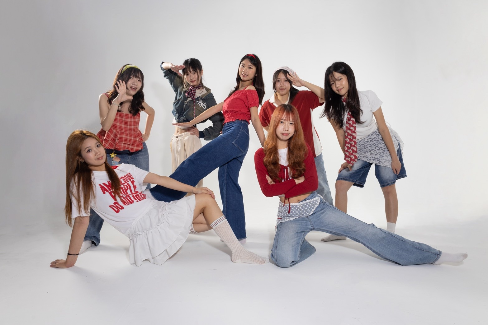

年輕族群不知道你
Debug校園情境、學生語感、社群溝通

Common Brand Bugs
How we debug
Diagnose
診斷
了解品牌現況、TA、競品與目前卡住的問題。
Insight
洞察
市調、社群觀察與情境分析，找到溝通切角。
Strategy
策略
訂出主題、訊息主軸、社群節奏與活動路線。
Create
製作
產出視覺、短影音、貼文、活動物料與展區。
Activate
執行
串聯線上線下，最後整理成果與數據回顧。
Services
品牌現況、競品分析、TA 定義、消費者洞察。
活動主題、傳播策略、社群節奏、預算與時程規劃。
Reels 腳本、拍攝、剪輯、圖文設計、互動貼文。
主視覺、展區視覺、社群模板、活動物料。
校園快閃、攤位互動、產品體驗、展覽策劃。
活動紀錄、社群數據、照片影片、結案報告。
Selected Cases
點圖片可以直接放大看。
 ▶ 點我看完整簡報
▶ 點我看完整簡報 ▶ 點我看競賽簡報
▶ 點我看競賽簡報 ▶
▶